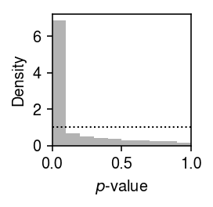
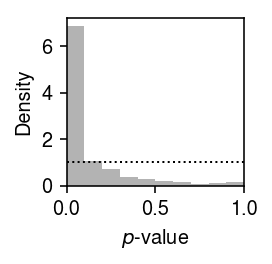

Expression variation in human retina cells
Table of Contents
Introduction
MacParland et al. 2018 generated a cell atlas of the human liver. Here, we study the prevalence of multi-modal expression variation in this data.
Setup
import anndata import numpy as np import pandas as pd import scanpy as sc import scipy.io as si import scipy.sparse as ss import scmodes import scmodes.benchmark.gof import scmodes.ebpm.sgd import torch
%matplotlib inline %config InlineBackend.figure_formats = set(['retina'])
import matplotlib.pyplot as plt plt.rcParams['figure.facecolor'] = 'w' plt.rcParams['font.family'] = 'Nimbus Sans'
Data
Download the data.
curl --ftp-pasv -OL "https://ftp.ncbi.nlm.nih.gov/geo/series/GSE115nnn/GSE115469/suppl/GSE115469_Data.csv.gz"
temp = pd.read_csv('/scratch/midway2/aksarkar/modes/GSE115469_Data.csv.gz', index_col=0)
x = anndata.AnnData(ss.csr_matrix(temp.values.T), var=pd.Series(temp.index).to_frame(), obs=pd.DataFrame([t.split('_')[:2] for t in temp.columns], columns=['donor', 'barcode'])) sc.pp.filter_genes(x, min_cells=.01 * x.shape[0]) x.var.columns = ['gene', 'n_cells']
Write the h5ad out.
x.write('/project2/mstephens/aksarkar/projects/singlecell-ideas/data/human-cell-atlas/liver-caudate-lobe/liver-caudate-lobe.h5ad')
Report the number of samples per donor.
x.obs['donor'].value_counts()
P3TLH 3127 P5TLH 1705 P4TLH 1325 P2TLH 1219 P1TLH 1068 Name: donor, dtype: int64
Read the h5ad.
x = anndata.read_h5ad('/project2/mstephens/aksarkar/projects/singlecell-ideas/data/human-cell-atlas/liver-caudate-lobe/liver-caudate-lobe.h5ad')
Results
Gamma assumption
Fit a Gamma distribution to expression variation at each gene within the donor with maximum number of cells assayed.
query = x.obs['donor'] == 'P3TLH'
res = scmodes.ebpm.sgd.ebpm_gamma(x[query].X, batch_size=64, max_epochs=60, verbose=True)
Test GOF at each gene.
s = x[query].X.sum(axis=1).A.ravel() gof_res = [] for j, (log_mu, neg_log_phi) in enumerate(np.vstack(res[:-1]).T): d, p = scmodes.benchmark.gof._gof(x=x[query,j].X.A.ravel(), cdf=scmodes.benchmark.gof._zig_cdf, pmf=scmodes.benchmark.gof._zig_pmf, size=s, log_mu=log_mu, log_phi=-neg_log_phi) gof_res.append([d, p]) gof_res = pd.DataFrame(gof_res, columns=['stat', 'p'], index=x.var['gene']).reset_index() gof_res.to_csv('/project2/mstephens/aksarkar/projects/singlecell-modes/data/gof/liver-caudate-lobe-gamma.txt.gz', sep='\t', compression='gzip')
Plot the histogram of GOF \(p\)-values.
plt.clf() plt.gcf().set_size_inches(2, 2) plt.hist(gof_res['p'], bins=np.linspace(0, 1, 11), color='0.7', density=True) plt.axhline(y=1, lw=1, ls=':', c='k') plt.xlim(0, 1) plt.xlabel('$p$-value') plt.ylabel('Density') plt.tight_layout()

Report the fraction of genes which significantly depart from a Gamma (Bonferroni-corrected \(p < 0.05\)).
sig = gof_res.loc[gof_res['p'] < 0.05 / gof_res.shape[0]] sig.shape[0] / gof_res.shape[0]
0.4391947411668036
Point-Gamma assumption
Fit a point-Gamma distribution to expression variation at each gene.
res = scmodes.ebpm.sgd.ebpm_point_gamma(x[query].X, max_epochs=60, verbose=True)
Test GOF at each gene.
import scmodes.benchmark.gof s = x[query].X.sum(axis=1).A.ravel() result = [] for j, (log_mu, log_phi, logodds) in enumerate(np.vstack(res[:3]).T): d, p = scmodes.benchmark.gof._gof(x=x[query,j].X.A.ravel(), cdf=scmodes.benchmark.gof._zig_cdf, pmf=scmodes.benchmark.gof._zig_pmf, size=s, log_mu=log_mu, log_phi=-log_phi, logodds=logodds) result.append([d, p]) result = pd.DataFrame(result, columns=['stat', 'p'], index=x.var['gene']).reset_index() result.to_csv('/project2/mstephens/aksarkar/projects/singlecell-modes/data/gof/liver-caudate-lobe-point-gamma.txt.gz', sep='\t', compression='gzip')
Plot the histogram of GOF \(p\)-values.
plt.clf() plt.gcf().set_size_inches(2, 2) plt.hist(result['p'], bins=np.linspace(0, 1, 11), color='0.7', density=True) plt.axhline(y=1, lw=1, ls=':', c='k') plt.xlim(0, 1) plt.xlabel('$p$-value') plt.ylabel('Density') plt.tight_layout()

Report the fraction of genes which significantly depart from point-Gamma (Bonferroni-corrected \(p < 0.05\)).
sig = result.loc[result['p'] < 0.05 / result.shape[0]] sig.shape[0] / result.shape[0]
0.3724732949876746
Write out the significant genes.
x.obs['size'] = x.X.sum(axis=1) x[query,sig.index].write('/scratch/midway2/aksarkar/modes/unimodal-data/liver.h5ad')
Unimodal assumption
Fit a unimodal distribution to expression variation at each gene which departed significantly from a point-Gamma assumption.
sbatch --partition=broadwl -n1 -c28 --exclusive --time=12:00:00 --job-name=gof #!/bin/bash source activate scmodes python <<EOF import anndata import multiprocessing as mp import pandas as pd import scmodes with mp.Pool(maxtasksperchild=20) as pool: x = anndata.read('/scratch/midway2/aksarkar/modes/unimodal-data/liver.h5ad') res = scmodes.benchmark.evaluate_gof(pd.DataFrame(x.X.A), s=x.obs['size'], pool=pool, methods=['unimodal']) res.index = x.var['featurename'] res.to_csv(f'/project2/mstephens/aksarkar/projects/singlecell-modes/data/gof/liver-unimodal.txt.gz', compression='gzip', sep='\t') EOF
Read the results.
unimodal_res = pd.read_csv('/project2/mstephens/aksarkar/projects/singlecell-modes/data/gof/retina-unimodal.txt.gz', sep='\t', index_col=0)
Plot the histogram of GOF \(p\)-values.
plt.clf() plt.gcf().set_size_inches(2, 2) plt.hist(unimodal_res['p'], bins=np.linspace(0, 1, 11), color='0.7', density=True) plt.axhline(y=1, lw=1, ls=':', c='k') plt.xlim(0, 1) plt.xlabel('$p$-value') plt.ylabel('Density') plt.tight_layout()

Report the number and fraction of genes which depart from a unimodal assumption.
sig = unimodal_res.loc[unimodal_res['p'] < .05 / unimodal_res.shape[0]] sig.shape[0], sig.shape[0] / x.shape[1]
(62, 0.005279291553133515)